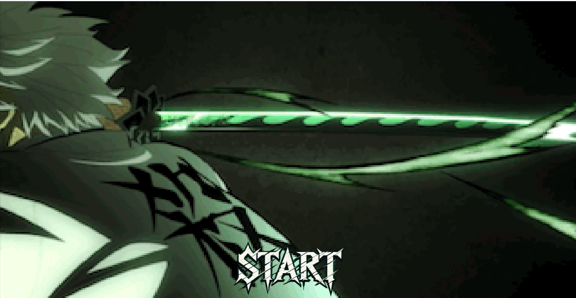

PROJECTS

SANEMI DASH
Sanemi Dash is a Java game inspired by the popular anime series Demon Slayer. In this game, players take on the role of a demon hunter, facing challenging enemies and using unique skills to defeat them. A perfect blend of action and strategy for anime fans and gamers alike.